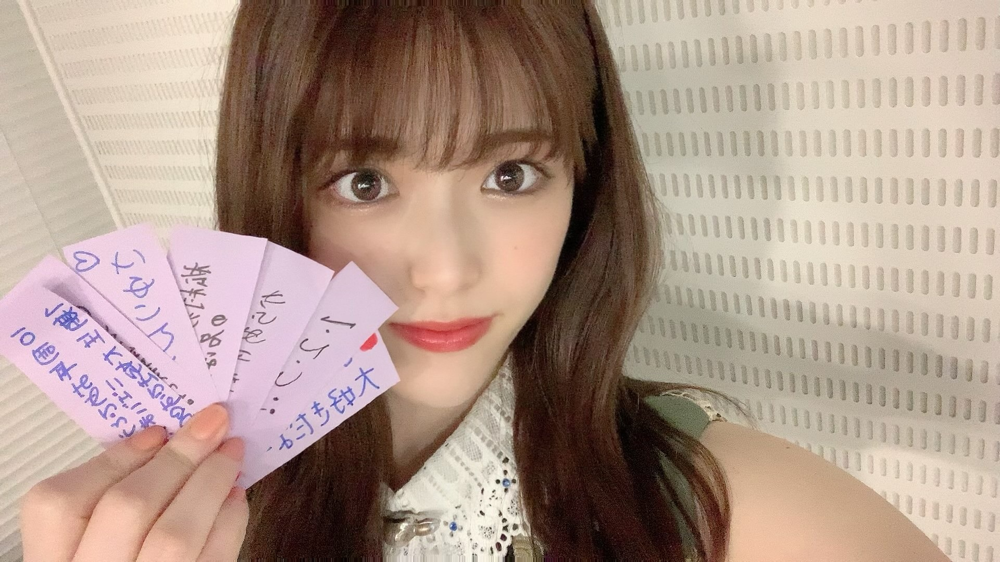
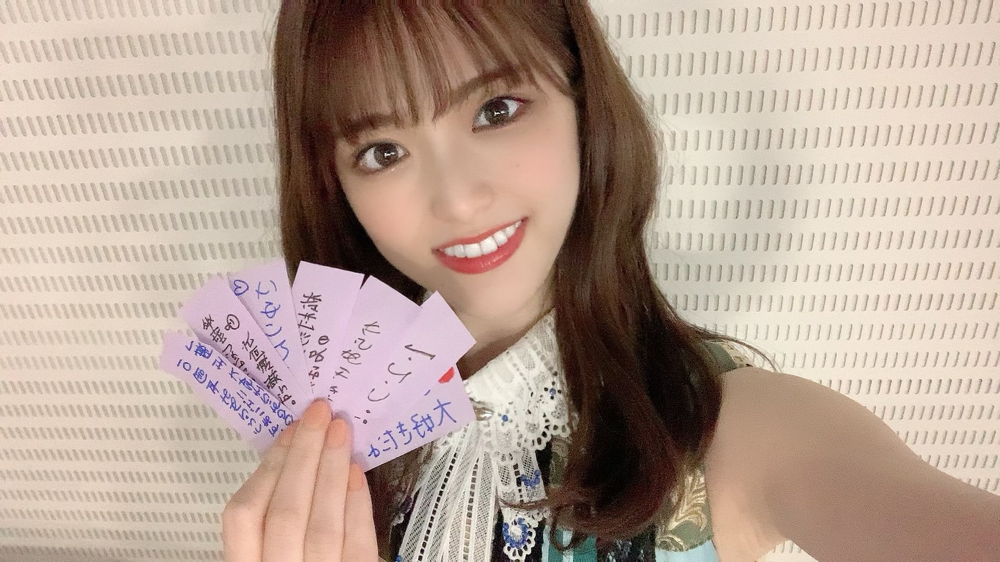

2021/0705Mon"これが最後"が多くなってっ(o・・o)
松村沙友理です
そろそろわたしの卒業が近づいて参りました！
卒業コンサートも無事に終わりました！
卒業コンサートはどの曲にも思い入れがあるので
ゆっくり書いていきたい...気持ちです。
今回はある日の私の心境を
ただつらつらと書きたいと思います
卒業を間近にした一人のアイドルの
なんて事ない記録だと思って適当に読んでもらえたら嬉しいです。
先日のTHE MUSIC DAYさんで
乃木坂46としてパフォーマンスするのは最後でした！
これまでも沢山の音楽番組で
私の卒業に触れて頂いて
花束なんか貰っちゃって
私は 自分の気持ちを話す時間を貰えたり
私なんかの為にお花まで用意してくださる事が
ただただ嬉しくて 心からの幸せを感じていました。
だからどの番組でもニコニコと
わーい♡はっぴー♡で過ごしていましたが
ついに本当の最後の日がきました。
私が大好きなメンバーと一緒に
歌って踊って笑い合える最後の日
メイクをしている時も
楽屋でみんなで番組を見ている時も
自分の出番を袖で待っている時も
何をしていても全てに最後だという
実感が湧いてきて
気を抜いたら泣いちゃうなと
ずっと涙を堪えていました。
泣いても良かったんじゃない？と
ファンの皆さんは言ってくれそうだけど
ただ泣くのが恥ずかしかったんです。笑
私の変な照れ隠しだったのかもしれません。
いつも通り終わりたかったのかもしれません。
メドレーが始まる前に
ぐるぐるカーテンのポジションに着いて
かっきーと久保ちゃんに挟まれて
「この二人に挟まれたら歌も上手に歌えそう〜♡」なんて冗談を言って後輩を困らせている時も
ずっとずっと
涙を我慢していました。
メドレーが始まると
不思議と涙は出なくって
このまま終わるのだと思ったら
ラストの曲
"ごめんねFingers crossed"
紙吹雪がスタジオに舞って
「お祝いメッセージが書かれています」のカンペを持ったスタッフさん
なんだろうと思って
紙を拾ってみると
"さゆりんご大好きだよー！"
"さゆりんお疲れさま"のメッセージ
今まで我慢していたものが
溢れでそうになりました。
スタジオ中に舞う沢山のメッセージ
書かれているりんごの絵
これはもう無理だ〜と思いながらも
泣かないと決めていたので
頑張って笑っていると
いくちゃんが
"これ！"と渡してくれた紙には
"軍団永久不滅！！"の文字
そして、私が持っていた紙には
"からあげ姉妹"の文字
手書きのメッセージ一枚一枚が
私にとって最高のサプライズでした。
本当に嬉しくて嬉しくて
生放送だから急いでステージを
おりながら 何枚か拾ってきました。
そしてそのメッセージを握りしめて
帰り道一人で静かに泣きました。
これが私が最後にパフォーマンスした日の記録です。


今回はゴミと間違えて捨てたりはしません。笑
2021/07/05 20:30
コメント(1449)
さゆりん。愛してるよ。
さゆりんご、大好きだよ！
さゆりんごは僕の一生の推しです！ほんとに大好きです！
乃木坂を好きになってから6年、1度もさゆりんに会うことは出来ずにお別れの日が近づいてきました。何回も、さゆりんの笑顔に救われました。本当にありがとうございました。これからのご活躍も、応援してます
さゆりんこれからも頑張って
さゆりんブログ更新ありがとう！
さゆりんが感情をありのままに表現してくれる ブログが大好きで、いつも更新を楽しみにしていました。
卒業ライブ、そして最後の音楽番組もお疲れさま。テレビの前で笑顔のさゆりんを見て、涙がとまりませんでした。
卒業は寂しいけれど、さゆりんがこれからもたくさんの愛に包まれて、幸せに過ごすことができますように。
さゆりんを知ることができて、本当に良かったです(^^)
乃木坂46のメンバーになってくれてありがとう。私たちにたくさんの笑顔をありがとう。
さゆりんが感情をありのままに表現してくれる ブログが大好きで、いつも更新を楽しみにしていました。
卒業ライブ、そして最後の音楽番組もお疲れさま。テレビの前で笑顔のさゆりんを見て、涙がとまりませんでした。
卒業は寂しいけれど、さゆりんがこれからもたくさんの愛に包まれて、幸せに過ごすことができますように。
さゆりんを知ることができて、本当に良かったです(^^)
乃木坂46のメンバーになってくれてありがとう。私たちにたくさんの笑顔をありがとう。
今まで本当にありがとう！〜
大好きです！
大好きです！
卒業おめでとう！
今までお疲れ様でした！これからも頑張って！
今までお疲れ様でした！これからも頑張って！
さゆりんを推せた期間は短かったけどでも最高に幸せにしてもらいました。ありがとうございました。これからも応援してます。だいすきです。
お疲れさまです。
10年間、本当にお疲れさまでした。
さゆりんごさんが出られる乃木坂46の番組を観ているといつも明るく楽しくいられて、自分も楽しくなってました。
昨年のコロナ禍で乃木坂46にはまった私ですが、素敵な時間を過ごさせて貰いました。
本当にありがとうございます
これからも身体には気を付けて、元気に過ごしてください。
また明るく楽しい姿を観たいです。さゆりんが元気でいるのが私の元気にもなりますので。
10年間、本当にお疲れさまでした。
さゆりんごさんが出られる乃木坂46の番組を観ているといつも明るく楽しくいられて、自分も楽しくなってました。
昨年のコロナ禍で乃木坂46にはまった私ですが、素敵な時間を過ごさせて貰いました。
本当にありがとうございます
これからも身体には気を付けて、元気に過ごしてください。
また明るく楽しい姿を観たいです。さゆりんが元気でいるのが私の元気にもなりますので。
まっちゅんほんとにお疲れ様でした。
これからもまっちゅんを応援し続けます！！
永久不滅だ！！！
これからもまっちゅんを応援し続けます！！
永久不滅だ！！！
配信みました！まじでプリンセスでした
昨日の乃木中のまちゅかわいすぎました
ごみと間違えちゃだめだよーー笑
昨日の乃木中のまちゅかわいすぎました
ごみと間違えちゃだめだよーー笑
お疲れさゆりんご！
りんごー❗️
ハートのハンバーグ早くぅ〜

ハートのハンバーグ早くぅ〜
まっちゅん！沢山の幸せをありがとう！これからもだーいすき！！
松村さんのこれからがより輝かしい日々でありますよう、心より願っております。
ホントお疲れ様でした
ホントお疲れ様でした
ありがとう。ただそれだけです。
まっちゅんに出会えた人生でよかった。
応援できてよかった。
私を笑顔にしてくれてありがとう。
まっちゅんに出会えた人生でよかった。
応援できてよかった。
私を笑顔にしてくれてありがとう。
沙友理ちゃん寂しいよ〜〜
あと8日しかないなんて。。。
あと8日しかないなんて。。。
まっちゅん
お疲れ様
改めて、卒業おめでとう
お疲れ様
改めて、卒業おめでとう
まちゅブログありがとう！
卒コンおつかれさま！歌番組ほんとに良かったです！
まちゅの笑顔が見れて嬉しいです。
涙我慢してたんだね。我慢しなくていいんだよ。
乃木中おもしろかったよ！笑。まちゅがいない乃木中は少し変な感じがするけど、１視聴者としてこれからも見てね！
これからもずっと応援してます！またブログ更新してください！
卒コンおつかれさま！歌番組ほんとに良かったです！
まちゅの笑顔が見れて嬉しいです。
涙我慢してたんだね。我慢しなくていいんだよ。
乃木中おもしろかったよ！笑。まちゅがいない乃木中は少し変な感じがするけど、１視聴者としてこれからも見てね！
これからもずっと応援してます！またブログ更新してください！
そんなさゆり姫が大好きです。
これからも
これからも
さゆりちゃんだいすき
沙友理ちゃんほんとにおつかれさま‼︎
アイドルとして最後のパフォーマンス、しっかりと目に焼き付けました‼︎あと少しの時間、楽しんでね♡
アイドルとして最後のパフォーマンス、しっかりと目に焼き付けました‼︎あと少しの時間、楽しんでね♡
さゆー！初めて握手した時すごい力強く握手握り返してくれてめちゃくちゃ嬉しかった思い出がある笑 卒業しちゃうのは本当に寂しいけど、これからさゆりんの活躍をずっと応援していけるのは幸せだよーー！！面白くて可愛いさゆりんにいつも癒されてた！乃木坂にずっといてくれて本当にありがとう。今回はゴミと間違えて捨てないのね！笑
ももんが
ももんが
沙友理ちゃん、あとほんの数日ですが、本当に本当に10年間お疲れ様でした！！最後の最後まで素晴らしいアイドル人生だったと思います！涙を堪えていたなんて……それを聞いただけでこっちまで泣きそうです、。
私に生きる理由をくれてありがとう
乃木坂46に入ってくれてありがとう
10年間頑張ってくれてありがとう
あなたを推せて本当に幸せです！！
私に生きる理由をくれてありがとう
乃木坂46に入ってくれてありがとう
10年間頑張ってくれてありがとう
あなたを推せて本当に幸せです！！
本当に本当にお疲れ様
乃木坂はさゆりちゃんが居てこその乃木坂でした、、
乃木坂はさゆりちゃんが居てこその乃木坂でした、、
まちゅ10年間お疲れ様！まちゅがいなくなるのとても寂しいですがこれからも乃木坂を応援していきたいと思います！そしてまちゅも新しい環境で頑張ってください！そしてこれからもずっと大好きです❤️❤️❤️さゆりんごパンチ
まちゅ最初っから最後まで超可愛かった！
お疲れ様！ありがとう！大好き！これからも応援しています！
お疲れ様！ありがとう！大好き！これからも応援しています！
10年間本当にお疲れ様でした。たくさんの笑顔ありがとうございました
ブログ更新ありがとうございます！
最後のパフォーマンスもいつも通り最っ高のまちゅでした！
卒業してしまうのはどうしても寂しいですけれど卒業後も応援し続けます！
あなたが乃木坂に残してくれたものはとても大きいです。あなたが愛した乃木坂をこれからも応援します。
乃木坂に入ってくれて、出会ってくれてありがとう。
最後のパフォーマンスもいつも通り最っ高のまちゅでした！
卒業してしまうのはどうしても寂しいですけれど卒業後も応援し続けます！
あなたが乃木坂に残してくれたものはとても大きいです。あなたが愛した乃木坂をこれからも応援します。
乃木坂に入ってくれて、出会ってくれてありがとう。
さゆりんほんとにお疲れ様！さゆりんごは最強のアイドルです！！
10年間ありがとう
これからもずっと応援します
これからもずっと応援します
さゆりちゃん最後の出演者お疲れ様！！
いくちゃんとからあげ姉妹で最後を飾れて良かったね！
いくちゃんとからあげ姉妹で最後を飾れて良かったね！
さゆりん！
素敵な文章にのせて、さゆりちゃんの感情や思いが伝わってきて嬉しいです。さゆりちゃんの最後のパフォーマンスを見届ける事ができて嬉しいです。さゆりちゃんを10年間応援できて嬉しいです。
さゆりちゃんの行動、表情、言動、秘めた感情、もらす感情がすごく魅力的です。
これからもいつも必ず応援しています。
素敵な文章にのせて、さゆりちゃんの感情や思いが伝わってきて嬉しいです。さゆりちゃんの最後のパフォーマンスを見届ける事ができて嬉しいです。さゆりちゃんを10年間応援できて嬉しいです。
さゆりちゃんの行動、表情、言動、秘めた感情、もらす感情がすごく魅力的です。
これからもいつも必ず応援しています。
さゆりん！ブログ更新ありがとう！！
さゆりんの卒業にまだ実感がないよ〜
乃木坂46を卒業してもさゆりんのこと
応援する！！！
今までありがとう！
さゆりんの卒業にまだ実感がないよ〜
乃木坂46を卒業してもさゆりんのこと
応援する！！！
今までありがとう！
まっつん！！コメント更新ありがとう！！！
いつも、楽しみにしてました！
まっつんが最初、卒業発表した時
驚きもあったけどすごく悲しかったです
でも、まっつんが決めたことなので、応援すると決めました！
いざ、卒業が近づくととても悲しいです。
いつもは当たり前だったものが、一つずつ最後になっていって
でも、卒業は次のステップだと知ってます。。
まっつんがこれからも自分らしくられるよう
僕は全力で応援まします！！今までありがとう！！
いつも、楽しみにしてました！
まっつんが最初、卒業発表した時
驚きもあったけどすごく悲しかったです
でも、まっつんが決めたことなので、応援すると決めました！
いざ、卒業が近づくととても悲しいです。
いつもは当たり前だったものが、一つずつ最後になっていって
でも、卒業は次のステップだと知ってます。。
まっつんがこれからも自分らしくられるよう
僕は全力で応援まします！！今までありがとう！！
さゆりんごのパフォーマンス最高だった！
もう見れないのは悲しい
あともうちょっとたけど頑張って!
もう見れないのは悲しい
あともうちょっとたけど頑張って!
やっぱ寂しいよ
さゆりんブログ更新ありがとう!!!
乃木坂46として最後のパフォーマンスで始まる前にかっきーと久保ちゃんに冗談言っちゃうとこがさゆりんらしいなと思ったよ
最後のサプライズの時、いくちゃんと2人で話してる姿がめっちゃ大好きで、やっぱりからあげ姉妹は永遠だなって思ったよ
ブログの最後の言葉がしあわせの保護色のMV撮影のエピソードのことを思い出したし、最後に笑わせてくれるのもさゆりんらしいね！
もうすぐ卒業するけど、いろんなところでまだまださゆりんのことを見れるからこれからの活躍を楽しみにしてるよー
さゆりんご完全燃焼!!!大好き♥︎:°.٩(⑅•ω•⑅)۶.°:♥︎
乃木坂46として最後のパフォーマンスで始まる前にかっきーと久保ちゃんに冗談言っちゃうとこがさゆりんらしいなと思ったよ
最後のサプライズの時、いくちゃんと2人で話してる姿がめっちゃ大好きで、やっぱりからあげ姉妹は永遠だなって思ったよ
ブログの最後の言葉がしあわせの保護色のMV撮影のエピソードのことを思い出したし、最後に笑わせてくれるのもさゆりんらしいね！
もうすぐ卒業するけど、いろんなところでまだまださゆりんのことを見れるからこれからの活躍を楽しみにしてるよー
さゆりんご完全燃焼!!!大好き♥︎:°.٩(⑅•ω•⑅)۶.°:♥︎
最後の歌番組、輝いていたよ
最後の最後まで乃木坂のさゆりんごを応援してます！
そして卒業しても応援します
最後の最後まで乃木坂のさゆりんごを応援してます！
そして卒業しても応援します
ブログ更新ありがとう！
いくちゃんと何を話していたのか気になってたから教えてもらえて嬉しいな！
音楽番組を見るたびにまちゅは本当に沢山の人に愛されていたんだなぁと感じてこちらも嬉しくなったよ！
乃木坂46としての最後の日まで、そして卒業してからも全力で応援するね！
最後に卒コンを現地で観ることができて、ミーグリでお話ができて本当に良かったです！
緊張しすぎて伝えたかったことの10分の1も伝えられなかったけど、少しでも伝わっていたら嬉しいなぁ〜。
ずっとずっと大好きだよー！！
いくちゃんと何を話していたのか気になってたから教えてもらえて嬉しいな！
音楽番組を見るたびにまちゅは本当に沢山の人に愛されていたんだなぁと感じてこちらも嬉しくなったよ！
乃木坂46としての最後の日まで、そして卒業してからも全力で応援するね！
最後に卒コンを現地で観ることができて、ミーグリでお話ができて本当に良かったです！
緊張しすぎて伝えたかったことの10分の1も伝えられなかったけど、少しでも伝わっていたら嬉しいなぁ〜。
ずっとずっと大好きだよー！！
まちゅ本当にお疲れ様でした〜今までずっとまちゅの笑顔に支えられてきて面白くて可愛くて綺麗でりんごなまちゅを見れて嬉しかったです！これからのご活躍を楽しみにしています
ブログありがとう！
さゆりんの最後とっっっても可愛くてかっこよかったよ！！
10年間めっちゃ笑顔にしてもらえて本当に幸せやった！
無理だけせんでね
最後に質問なんですけど、斉木楠雄の災難読んだことありますか？めっちゃおもろいですよ！！全26巻です！笑
さゆりんの最後とっっっても可愛くてかっこよかったよ！！
10年間めっちゃ笑顔にしてもらえて本当に幸せやった！
無理だけせんでね
最後に質問なんですけど、斉木楠雄の災難読んだことありますか？めっちゃおもろいですよ！！全26巻です！笑
歌番組観てたよ！
沙友理ちゃんお疲れ様
ブログ読んで涙が溢れ出しました。好き
これからもずっと応援します♪
沙友理ちゃんお疲れ様
ブログ読んで涙が溢れ出しました。好き
これからもずっと応援します♪
まっちゅんおつかれさま！
卒業してもずっとずっと応援してるよ！！
卒業してもずっとずっと応援してるよ！！
今まで本当にありがとうございます！！！
これからも応援してます！！
頑張ってください！！
コロナにも気をつけてください！！
大好きです！！
からあげ姉妹永久不滅〜！！
これからも応援してます！！
頑張ってください！！
コロナにも気をつけてください！！
大好きです！！
からあげ姉妹永久不滅〜！！
最後の1文はまいやんとの思い出のこと懐かしいラストの活動頑張ってください！
初めまして！ユイナっちと申します！
乃木坂を好きになったのは小3の時でした。
からあげ姉妹の「無表情」が大好きで、習い事行く前いっつも聴いてました。
そんな私も今ではもう高校2年生です！笑
学生生活辛いこともあったけど、さゆりんごの笑顔に何度救われたか分かりません。
本当にありがとうございました！
これからのさゆりんごの人生、笑顔と幸せが溢れていますように！！
ずーっとずっと大好きだよ！！
ユイナっちより
乃木坂を好きになったのは小3の時でした。
からあげ姉妹の「無表情」が大好きで、習い事行く前いっつも聴いてました。
そんな私も今ではもう高校2年生です！笑
学生生活辛いこともあったけど、さゆりんごの笑顔に何度救われたか分かりません。
本当にありがとうございました！
これからのさゆりんごの人生、笑顔と幸せが溢れていますように！！
ずーっとずっと大好きだよ！！
ユイナっちより


とっても良かった！相変わらずとっても可愛くて…
まさにザ！アイドル！！って存在でした！
あともう少しの時間だけど、最後までまちゅらしく駆け抜けて下さい！！私もアイドルになりたい！松村沙友理さんのような皆んなから愛される、可愛くて、努力家で、一生懸命な人間になりたい！そう思わせてくれる存在
卒ラもまちゅらしさ全開で最高でした‼︎
お疲れ様でした！！！